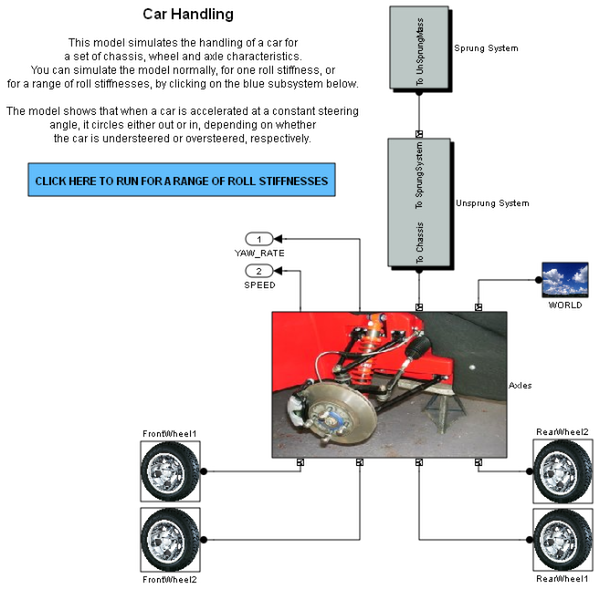
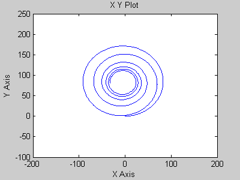
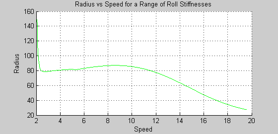

Car Handling
This model simulates the handling of a car for a set of chassis, wheel and axle characteristics. You can simulate the model for one roll stiffness, or for a range of roll stiffnesses by clicking on the blue subsystem.
The model shows that when a car is accelerated at a constant steering angle, it circles either out or in, depending on whether the car is understeered or oversteered, respectively.
  